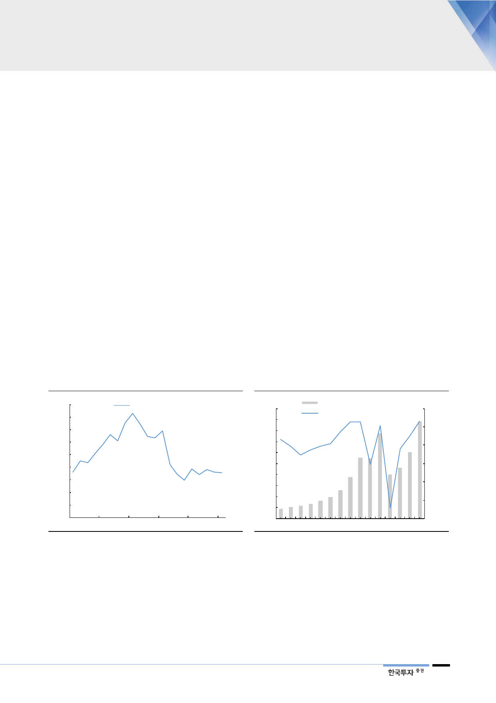

III. 국내, 더 잃을 것이 없다
잃어버린 2년 –
내수 부진이 주요인
국내 사업이 실적 부진의 직접적인 원인이었으나 금년 상반기를 저점으로 예상한
다. 국내 사업 영업이익이 2016년 6,700억원을 피크로 2018년 2,840억원으로
급감했다. 국내 사업은 중국인 매출 비중이 높은 면세점과 순수 내수 매출로 나뉘
는데, 면세점이 산업 성장률을 하회하는 동시에 국내 순수 매출액이 역성장, 이익
도 급감했다. 2017년 사드 영향뿐 아니라 면세, 국내 시장에서 경쟁 심화와 자체
적인 브랜드 및 채널 재정비 영향으로 추정된다.
면세점 – Traffic 회복과
함께 점진적인 회복 예상
전체 입국자수가 증가세로 전환한 2018년 2분기부터 동사의 면세점 매출액도
증가세로 전환했다. 관건은 면세점 산업 성장률에 미치지 못한다는 점인데, 국내
시장이 인당 구매액 상승과 리셀러 위주로 시장이 형성되면서 구매 제한이 타이
트한 동사 면세점 사업 회복이 상대적으로 더딘 것으로 판단된다. 동사의 면세점
정책은 인당 구매액보다 traffic 위주의 전략으로 산업 성장률보다 낮음은 불가피
한 현상이나 인바운드 트래픽 회복과 함께 연 10%대의 성장이 가능할 전망이다.
2017년 3월 방한 금지 이후 중국인 관광객수는 2016년 800만명을 피크로
2017년 48% 급감한 416만명에 불과했다. 작년 2분기부터 전년대비 회복 국면
에 진입, 금년 전년대비 37% 증가한 656만명으로 예상된다. 단체 관광객 회복
본격화가 관건이나 작년 3월부터 전년대비 증가세로 전환, 관련 규제도 점진적으
로 완화되고 있어 회복은 가시화되고 있다.
[그림 18] 면세점 내 점유율 하락 이후 안정화
(%)
18
16
면세점 시장 내 점유율
14
12
10
8
6
4
2
0
14
15
16
17
18
자료: 한국면세점협회, 아모레퍼시픽, 한국투자증권
1Q1 9F
[그림 19] 중국인 인바운드 관광객 전망
(백만명)
10
9
8
한국 방문 중국인 관광객수(좌) (% YoY)
60
증감률(우)
40
7
20
6
5
0
4
3
(20)
2
(40)
1
0
(60)
2006 2008 2010 2012 2014 2016 2018F 2020F
자료: 한국관광공사, 한국투자증권
내수 부진 일단락 국면
면세점 회복에 힘입어 국내 화장품 매출액은 2018년 2분기부터 성장세로 전환
했다. 관건은 순수 내수가 아직 역성장 국면이라는 점인데 2017년 사드 영향뿐
아니라 동사 자체적인 브랜드 리뉴얼, 마케팅 강화 및 홈쇼핑 철수와 아리따움 매
장 정비 등 채널 재정비 영향으로 판단된다. 국내 사업 영업이익률은
2015~2016년 15% 수준에서 작년 0% 수준으로 하락했다. 작년 하반기부터는
동사의 ‘아리따움’ 채널 중 일부를 멀티브랜드샵으로 전환하고 있다.
11